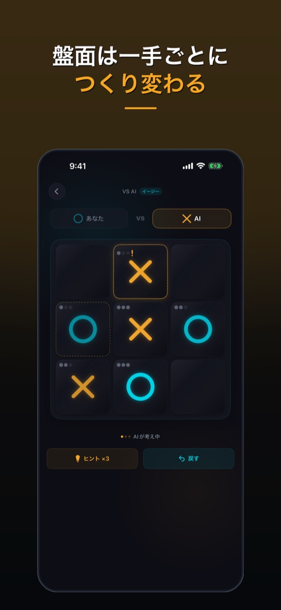
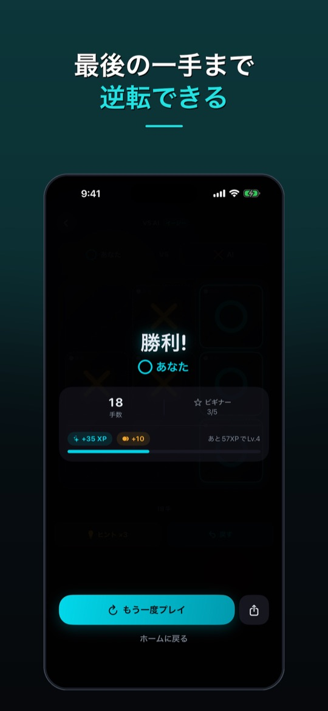
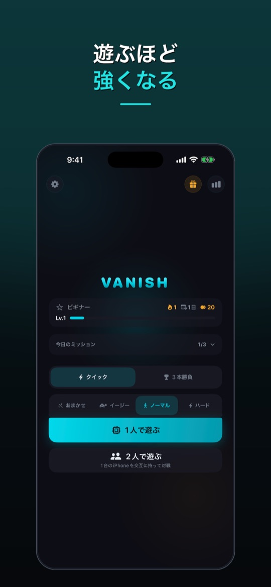

○×ゲームなのに、いちばん古い駒が消える。
Vanish は、駒を3つまでしか置けない○×ゲーム（三目並べ）です。4つ目を置くと、いちばん古い駒が消えます。盤面が埋まらないので、引き分けはほとんどありません。
App Store でダウンロード 無料 · iPhone · オフラインで遊べる新ルール「バニッシュ」
英語圏では Infinite Tic Tac Toe とも呼ばれる遊び方です。完成しかけたラインも、駒が消えれば崩れます。
1
3つまで置ける
盤面に置ける自分の駒は、最大3つです。
2
古い駒が点滅
4つ目を置く前に、いちばん古い駒が点滅します。
3
置くと消える
4つ目を置いた瞬間、いちばん古い駒が消えます。
普通の三目並べとの違い
普通の 3×3 の○×ゲームは、慣れた人同士だとほぼ引き分けになります。Vanish では、次にどの駒が消えるか（自分のも相手のも）を読む必要があり、数手先を考えた方が勝ちます。



できること
- 4段階のAI（おまかせ・イージー・ノーマル・ハード）
- ローカル2人対戦（1台の iPhone で交互に）
- クイックマッチと3本勝負、先攻はコイントスで
- デイリーミッションとデイリーチェスト、ビギナーからマスターまで6段階のランク
- ヒントとアンドゥ（1ゲームにヒント3回・アンドゥ1回）
- オフラインで遊べる
よくある質問
オフラインでも遊べますか？
はい。AI 対戦とローカル対戦は、インターネットに接続しなくても遊べます。
広告はありますか？
無料で遊べる代わりに広告が表示されます（バナー、一部の対戦の合間の広告、任意で見る動画広告）。アプリ内で広告を消す買い切りの購入もあります。購入の復元は、設定から行えます。
データはどう扱われますか？
詳しくは、プライバシーポリシーをご覧ください。
不具合を見つけたら？
サポートフォームからお送りください。